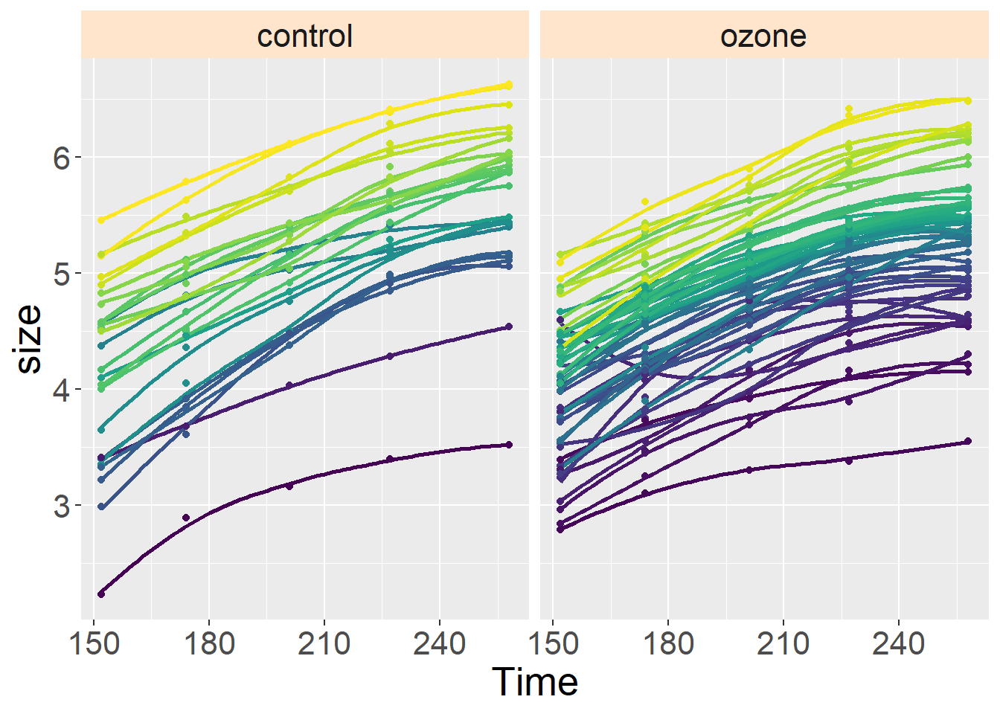
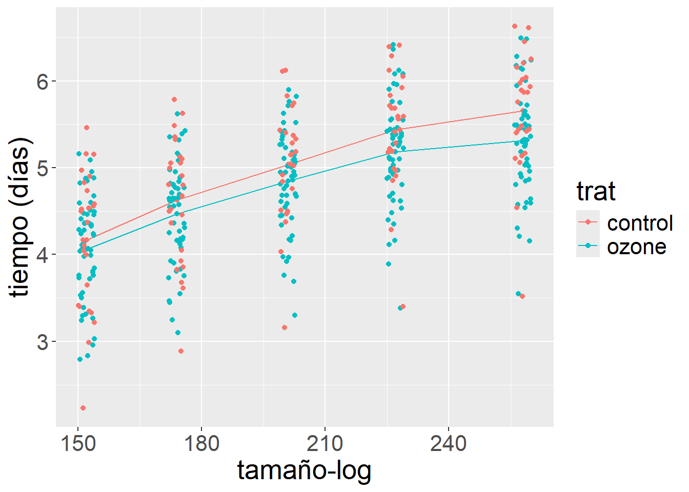

El tiempo es una variable problemática en el análisis estadístico, sobre todo por la necesidad de postular el supuesto de independencia entre las observaciones, lo que solemos asegurar aleatorizando las unidades experimentales. Las observaciones arregladas a lo largo del tiempo comúnmente no pueden aleatorizarse, por ejemplo cuando estamos dando seguimiento al crecimiento de un organismo. Por otro lado, también puede ocurrir esta falta de independencia por cercanía geográfica, así que el espacio comparte desafíos estadísticos con el tiempo.
Medidas repetidas (seguimiento a lo largo del tiempo)
Ejemplo con árboles de Sitka
Fuente: Venables y Ripley (1999, p.206), tabla Sitka de la biblioteca MASS. Datos de Diggle, Liang y Zeger (1994).
Se trata de mediciones del tamaño-log (que se define como el logaritmo de la altura más dos veces el logaritmo del diámetro), de 79 árboles de Sitka spruce.
A 54 de ellos se les hizo crecer en cámaras con atmósfera enriquecida con ozono y otros 25 fueron controles. La talla fue medida cinco veces en 1988 a intervalos de aproximadamente un mes (el tiempo se da en días a partir del 1 de enero de 1998). En 1989 se tomaron otras ocho mediciones (que se incluyen en una tabla aparte: Sitka89).
Código
library(MASS)library(nlme)library(tidyverse)
── Attaching core tidyverse packages ──────────────────────── tidyverse 2.0.0 ──
✔ dplyr 1.1.4 ✔ readr 2.1.5
✔ forcats 1.0.0 ✔ stringr 1.5.1
✔ ggplot2 3.5.1 ✔ tibble 3.2.1
✔ lubridate 1.9.4 ✔ tidyr 1.3.1
✔ purrr 1.0.2
── Conflicts ────────────────────────────────────────── tidyverse_conflicts() ──
✖ dplyr::collapse() masks nlme::collapse()
✖ dplyr::filter() masks stats::filter()
✖ dplyr::lag() masks stats::lag()
✖ dplyr::select() masks MASS::select()
ℹ Use the conflicted package (<http://conflicted.r-lib.org/>) to force all conflicts to become errors
La estructura de grupos podemos usarla para representar una curva de crecimiento por árbol. Los 79 árboles en los datos “sitka” son demasiados para el ejemplo que quiero ilustrar. Mostraré sólo dos árboles: el 64 y 24.
Pongo una línea de tendencia en la gráfica con la opción geom_smooth. Tengo multiples opciones, ve la ayuda, pero aquí consideré dos opciones loess con el parámetro span = 1. La otra opción que consideré fue el método gam. Esta solución es demandante en cuanto a número de datos necesarios. En este caso tuve que ajustar el parámetro de número de nudos (knots), pues la aproximación a una curva suave por el método aditivo generalizado usado, gam, requiere por defecto datos para por lo menos calcular 10 nudos y esto no se logra en este conjunto de datos. Usualmente funciona sin mayores problemas cuando se tienen más de 1000 puntos. Para tener una representación un poco más simple opté por eliminar los intervalos de confianza, eso lo controla el parámetro se.
Código
options(repr.plot.width=12, repr.plot.height=6)library(ggplot2)ggplot(sitka88, aes(x=Time, y=size, color = tree)) +geom_smooth(method ="loess", span =1, formula = y ~ x, se =FALSE, show.legend =FALSE) +geom_point(show.legend =FALSE) +facet_grid(. ~ treat) +theme(strip.background =element_rect(fill="#ffe5cc"),text =element_text(size =20))

Código
ggplot(sitka88, aes(x=Time, y=size, color = tree)) +geom_smooth(method ="gam", span =1, formula = y ~s(x, bs ="cs", k =5), se =FALSE, show.legend =FALSE) +geom_point(show.legend =FALSE) +facet_grid(. ~ treat) +theme(strip.background =element_rect(fill="#ffe5cc"),text =element_text(size =20))
Ahora ajusto el modelo completo con el tiempo. Fuerzo a que el tiempo sea tratado como un factor ordenado, lo que junto con la opción de contraste usada ajusta polinomios ortogonales en este caso.
Notando la significancia de los términos de interacción: ¿podría simplificar el modelo limitando el ajuste a un efecto lineal de crecimiento que distingue entre los tratamiento? Veamos, calculo un nuevo vector que me permite hacer el ajuste de un efecto lineal a la diferencia entre tratamientos (que es la interacción).
Ahora ajusto un modelo en el que elimino la interacción de tratamiento con tiempo. Al mismo tiempo substituyo este efecto por el modelo con tiempo lineal en interacción con el tratamiento ozono (la variable que acabo de construir).
El resumen del ajuste muestra dos criterios que no hemos comentado mayormente antes. Son útiles para comparar y evaluar modelos. Estas medidas son resultado de la búsqueda de alternativas para valorar modelos que no se centre en el famoso valor de p.
AIC - Criterio de información de Akaike = -2 * logVerosimilitud + 2 numParámetros
Es bueno contar con ellos para comparar la calidad general de los modelos ajustados, pero no olvides que centrar nuestra atención en los intervalos de confianza es más informativo y potencialmente interesante.
En cualquier caso, “entre más pequeño el valor del criterio, mejor”.
Tanto el criterio AIC como el BIC sugieren que el modelo reducido es preferible al modelo completo inicial. ¿Qué sugiere la comparación, en devianzas, de ambos modelo?
Código
anova(sitka.lme1, sitka.lme2)
Warning in anova.lme(sitka.lme1, sitka.lme2): fitted objects with different
fixed effects. REML comparisons are not meaningful.
Model df AIC BIC logLik Test L.Ratio p-value
sitka.lme1 1 12 79.90098 127.3399 -27.95049
sitka.lme2 2 9 69.26910 104.9181 -25.63455 1 vs 2 4.631882 0.2008
Notese la advertencia que aparece al intentar esta comparación. Para resolverla, hay que volver a ajustar los modelos de interés, pero ahora con el método “ML”, que si me permite hacer comparaciones entre modelos.
Model df AIC BIC logLik Test L.Ratio p-value
sitka.lme1.ML 1 12 30.94633 78.69296 -3.473163
sitka.lme2.ML 2 9 25.43446 61.24443 -3.717228 1 vs 2 0.4881304 0.9215
Código
summary(sitka.lme2.ML)
Linear mixed-effects model fit by maximum likelihood
Data: sitka88
AIC BIC logLik
25.43446 61.24443 -3.717228
Random effects:
Formula: ~1 | tree
(Intercept) Residual
StdDev: 0.602333 0.1591217
Fixed effects: size ~ ordered(Time) + treat + tratGrad
Value Std.Error DF t-value p-value
(Intercept) 4.985120 0.12239376 311 40.73018 0.0000
ordered(Time).L 1.197551 0.03207475 311 37.33625 0.0000
ordered(Time).Q -0.145494 0.01812043 311 -8.02931 0.0000
ordered(Time).C -0.050596 0.01806336 311 -2.80105 0.0054
ordered(Time)^4 -0.016724 0.01806906 311 -0.92559 0.3554
treatozone 0.221677 0.17517548 77 1.26546 0.2095
tratGrad -0.002139 0.00046271 311 -4.62167 0.0000
Correlation:
(Intr) o(T).L o(T).Q o(T).C o(T)^4 tretzn
ordered(Time).L 0.000
ordered(Time).Q 0.000 0.066
ordered(Time).C 0.000 0.000 0.000
ordered(Time)^4 0.000 0.021 0.002 0.000
treatozone -0.699 0.442 0.042 0.000 0.013
tratGrad 0.000 -0.826 -0.079 0.000 -0.025 -0.535
Standardized Within-Group Residuals:
Min Q1 Med Q3 Max
-2.631308932 -0.525058743 0.009619032 0.514425152 5.968135202
Number of Observations: 395
Number of Groups: 79
Selección del polinomio
Ahora veamos un poco más de cerca el modelo y veamos si la respuesta muestra una curvatura que pueda ser aproximada entonces por un polinomio y en ese caso identificar el polinomio de menor grado que podríamos usar.
Recuerden que al utilizar factores ordenados le estamos indicando a R que optaremos por contrastes polinomiales ortogonales. Otra manera de obtener estos contrastes es con la función poly. Para ver como funciona esto usemos este comando los datos de tiempo. Del vector Time poly produce cuatro columnas nuevas, que dan cuenta de la tendencia lineal, cuadrática, cúbica, etc., con la peculiaridad de que cada columna es ortogonal a las demás.
Ahora podemos compararlo con el modelo “2” que ajustamos antes, para explorar si el nuevo modelo pierde una grado importante de capacidad explicativa.
Código
anova(sitka.lme2.ML, sitka.lme3.ML)
Model df AIC BIC logLik Test L.Ratio p-value
sitka.lme2.ML 1 9 25.43446 61.24443 -3.717228
sitka.lme3.ML 2 8 27.31449 59.14557 -5.657243 1 vs 2 3.88003 0.0489
El crecimiento promedio de los árboles a lo largo del tiempo se puede ver así, aunque esto no considera la variación debida a los árboles en lo individual. No obstante veamos el resultado general.
Más adecuado es utilizar la función predict() para considerar las particularidades del modelo para hacer las predicciones. Estos resultados los pondremos en una gráfica para ver de mejor manera los resultados.
Los modelos pueden incorporar una estructura de modelación de los patrones de correlación entre las observaciones. En este caso derivadas del hecho de que las mediciones se realizan a lo largo del tiempo, en intervalos relativamente cortos, sobre el mismo sujeto. Haremos esto aquí solo para ejemplificar el tema, que es amplio. Mi recomendación es más bien recurrir a la literatura existente para profundizar en el tema. Nótese que para la comparación de modelos en donde no estamos cambiando los componentes fijo, puede hacerse aún cuando el método de ajuste sea el REML. Usamos una opción del patrón de correlación que estamos asumiendo mediante la opción cor que recibe una estructura que da cuenta del patrón de correlación que se asume afecta a la forma como se producen las observaciones. En este caso optamos por un proceso de autocorrelación de orden 1 en las observaciones con correlación de 70%, derivado de medir a lo largo del tiempo cada árbol. Esto es lo que hace la función corCAR1, sobre la que pueden encontrar más información en la ayuda de R.
Código
sitka.lme4 <-lme(size~ treat *ordered(Time), random =~1| tree,data = sitka88, corr=corCAR1(0.7, ~ Time | tree))
Veamos como cambian los estadísticos de los modelos. Comparemos el modelo completo inicial, contra el completo considerando la nueva información sobre la correlación que hemos agregado en el modelo 4.
Código
anova(sitka.lme1,sitka.lme4)
Model df AIC BIC logLik Test L.Ratio p-value
sitka.lme1 1 12 79.90098 127.3399 -27.95049
sitka.lme4 2 13 -63.17167 -11.7795 44.58583 1 vs 2 145.0727 <.0001
Se ve raro que haya AIC y BIC negativos, pero pasa, sí los consideraríamos como valores más pequeños que los positivos, así que aquí, el modelo 4 parece tener un ajuste bastante mejor que el 1.
Aunque hay obviamente una importante correlaciónn entre observaciones, el efecto de considerar esto en el modelo es mínimo en términos de los valores de los coeficientes, aunque la significación valorada en términos de p cambia un poco, pero nada que nos haga modificar la apreciación del modelo. No parece valer la pena incorporar este aspecto de autocorrelación en el ajuste final, si nos atenemos a preferir el modelo más simple. Por otro lado, el asunto de considerar un efecto de autocorrelación en las observaciones parece exigir ser considerado. Tomemos este último camino
Los intervalos de confianza de los coeficientes del modelo 4 son estos:
Código
intervals(sitka.lme4, which ="fixed", level =0.95)$fixed
Una gráfica de los resultados podría ser así. Ilustra la regresión obtenida para cada tratamiento y añado los puntos observados ( para que se vean un poco mejor use el geoma “jitter” que grafica los puntos pero procurando que no se sobrepongan. Le pedí que lo hicieran en “bandas” de ancho 2.
Código
ggplot(sitka.fin, aes(x=tiempo, y=ajustado, color = trat)) +geom_line(show.legend =TRUE) +geom_point(show.legend =FALSE) +xlab(label ="tamaño-log") +ylab(label ="tiempo (días)") +theme(strip.background =element_rect(fill="#ffe5cc"),text =element_text(size =20)) +# componente que agrega los datos a la gráficageom_jitter(data = sitka88, width =2, mapping =aes(x = Time, y = size, color = treat))

Construir los intervalos de confianza a partir del modelo de efectos mixtos puede ser un poco más elaborado, así que a continuación muestro como pueden hacerse. Una posibilidad es usar la función intervalscon la opción which = “fixed” para recuperar los resultados que implica sólo a los componentes de efectos fijos del modelo, que son los que se involucran en la predicción (los aleatorios participan en las varianzas).
Ahora calculamos los errores estándar de las predicciones. La matriz diseño contiene las variables indicadoras de todos los términos en el modelo. Al multiplicarla por la matriz de varianzas y covarianzas del modelo (la que está en el componente sitka.lme4$varFix del modelo ajustado), produce los estimadores de varianza requeridos
Solo resta agregar las bandas de confianza en torno a la egresión. Esto lo haré con el geoma “ribbon” de ggplot2. Esta será una gráfica compleja que se elabora a partir de tres tablas de datos.
Código
ggplot(sitka.fin, aes(x=tiempo, y=ajustado, color = trat)) +geom_line(show.legend =TRUE) +# Etiquetas y formato de desplieguexlab(label ="tamaño-log") +ylab(label ="tiempo (días)") +theme(strip.background =element_rect(fill="#ffe5cc"),text =element_text(size =20)) +# bandas de confianzageom_ribbon(data = sitka_intconf, aes(x = Time, y = ajus, color = treat,ymin = ajus -2* SE,ymax = ajus +2* SE),alpha=0.2, fill ="blue") +# componente que agrega los datos a la gráficageom_jitter(data = sitka88, width =2, mapping =aes(x = Time, y = size, color = treat))